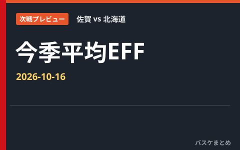
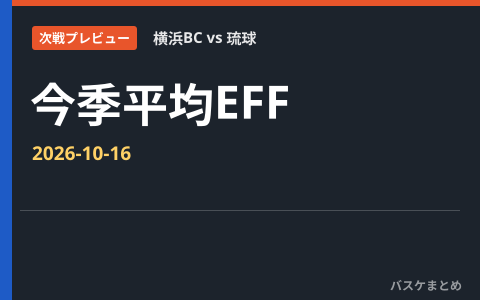
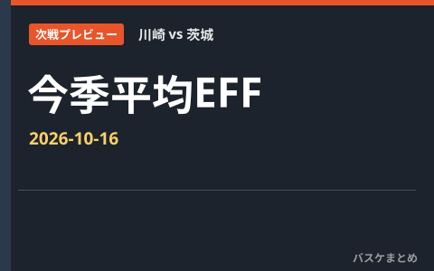
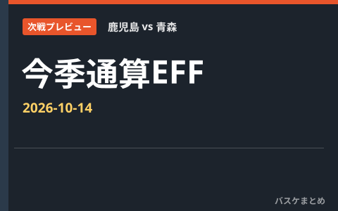
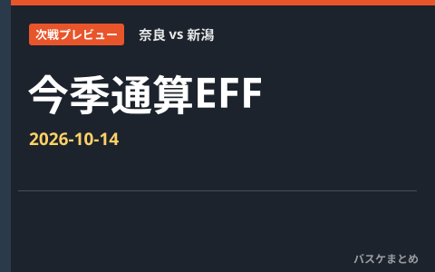
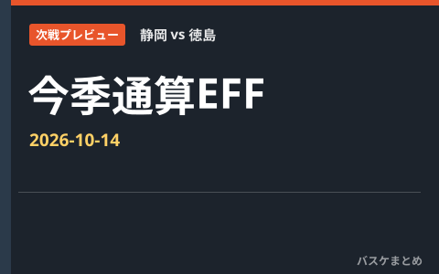
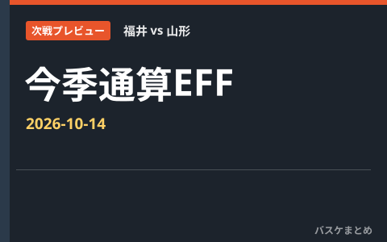
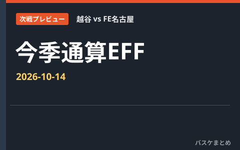

編集部まとめ記事 一覧
試合結果・速報・移籍情報・データのまとめ記事を新しい順に並べています。
順位・日程
湘南 vs 山口 次戦プレビュー｜ポジション別・今季通算EFF

順位・日程
佐賀 vs 北海道 次戦プレビュー｜ポジション別・今季通算EFF

順位・日程
横浜BC vs 琉球 次戦プレビュー｜ポジション別・今季通算EFF

順位・日程
川崎 vs 茨城 次戦プレビュー｜ポジション別・今季通算EFF

順位・日程
鹿児島 vs 青森 次戦プレビュー｜ポジション別・今季通算EFF
順位・日程
福岡 vs 横浜EX 次戦プレビュー｜ポジション別・今季通算EFF
順位・日程
愛媛 vs 金沢 次戦プレビュー｜ポジション別・今季通算EFF
順位・日程
岡山 vs 香川 次戦プレビュー｜ポジション別・今季通算EFF

順位・日程
奈良 vs 新潟 次戦プレビュー｜ポジション別・今季通算EFF

順位・日程
静岡 vs 徳島 次戦プレビュー｜ポジション別・今季通算EFF
順位・日程
岐阜 vs 埼玉 次戦プレビュー｜ポジション別・今季通算EFF

順位・日程
福井 vs 山形 次戦プレビュー｜ポジション別・今季通算EFF

順位・日程
八王子 vs 熊本 次戦プレビュー｜ポジション別・今季通算EFF

順位・日程
越谷 vs FE名古屋 次戦プレビュー｜ポジション別・今季通算EFF

順位・日程
岩手 vs 東京Z 次戦プレビュー｜ポジション別・今季通算EFF

試合結果
2026-10-13 B.ONE・B.NEXT 試合結果まとめ

順位・日程
10月12日の貢献度ランキング 1位はマイク・コッツァー（横浜BC）の43 日本人トップは新井 楽人

速報
ウェンバンヤマ、プレシーズンでチーム最多6アシスト プレーメイクに成長の兆し

速報
さいたまブロンコス古牧昌也が全治6週間、横浜BCはマクガスティが全治2〜3カ月でIL入り

試合結果
A東京と群馬が6勝1敗で首位並走 横浜BCは新井楽人が延長で33得点、長崎は3連勝
最終更新: 2026年10月13日 23:16